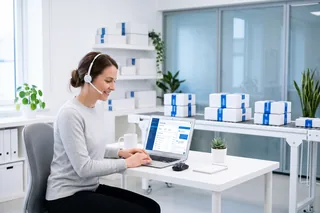

Karte mit Bildern und Preisen
Döner, Dürüm, Teller, Lahmacun, Beilagen und Getränke als übersichtliche Karte mit Bildern, Preisen und Allergen-Kennzeichnung nach euren Angaben. Änderungen tragt ihr selbst ein.
Alle 14 Leistungen
Als Geschichte erleben › 01 · DesignWebsitesDesign, Entwicklung, Hosting & Betreuung
01 · DesignWebsitesDesign, Entwicklung, Hosting & Betreuung
 02 · FindSEO & SichtbarkeitAudit, On-page, Content
02 · FindSEO & SichtbarkeitAudit, On-page, Content
 03 · ManageSysteme & DashboardsWarenwirtschaft, Personal, Dashboards
03 · ManageSysteme & DashboardsWarenwirtschaft, Personal, Dashboards

04 · ConnectAutomatisierung & KI-AgentenAgenten, Integrationen, Abläufe 05 · DevelopApp DesignUX, UI, Prototyp, Entwicklung
05 · DevelopApp DesignUX, UI, Prototyp, Entwicklung
 06 · ProtectBewertungs-Löschservice10 € netto pro gelöschter Bewertung
06 · ProtectBewertungs-Löschservice10 € netto pro gelöschter Bewertung
 07 · CreateWerbeclipsWerbefilme, Motion Design, Social Ads
07 · CreateWerbeclipsWerbefilme, Motion Design, Social Ads
 08 · RunAds-ManagementMeta, TikTok, Google, laufend betreut
09Newsletter-MarketingAufbau, Texte, Versand
08 · RunAds-ManagementMeta, TikTok, Google, laufend betreut
09Newsletter-MarketingAufbau, Texte, Versand
 11 · CraftPrint DesignTextil, Objekte, Packaging
11 · CraftPrint DesignTextil, Objekte, Packaging
 12 · ProduceMerch-ProduktionJersey, Denim, Strick, Kollektionen
12 · ProduceMerch-ProduktionJersey, Denim, Strick, Kollektionen
 13 · EnvisionRäume & VisualisierungGarten, Interior, Architektur
13 · EnvisionRäume & VisualisierungGarten, Interior, Architektur
 MehrIndividuelle AufträgeWenn deine Idee in kein Raster passt
MehrIndividuelle AufträgeWenn deine Idee in kein Raster passt
Branchen · Gastronomie
PROJEKT EX baut Websites für Dönerläden und Imbisse, auf denen Gäste in Sekunden die Karte, die Öffnungszeiten und den Weg zur Abholung finden. Auf Wunsch kommt eine eigene App dazu, mit der Stammgäste bestellen und Punkte sammeln.
Beim Imbiss wird spontan entschieden, oft auf dem Handy in der Mittagspause oder spät abends. Gesucht wird: Hat der Laden offen, was gibt es, was kostet es, kann ich vorbestellen. Eine Imbiss-Website muss diese Fragen auf dem ersten Bildschirm beantworten und schnell laden, auch bei schwachem Netz.
Döner, Dürüm, Teller, Lahmacun, Beilagen und Getränke als übersichtliche Karte mit Bildern, Preisen und Allergen-Kennzeichnung nach euren Angaben. Änderungen tragt ihr selbst ein.
Vorbestellen zur Abholung mit Wunschzeit, auf Wunsch auch Lieferung mit Liefergebiet. Wenn ihr schon ein Bestellsystem nutzt, binden wir es ein, sofern es eine Einbindung oder Schnittstelle anbietet.
Öffnungszeiten, Adresse, Anruf- und Routen-Knopf sind auf jeder Seite sichtbar. Wer spät noch Hunger hat, sieht sofort, ob ihr noch offen habt.
Die meisten Gäste finden einen Imbiss über Google Maps. Website und Google-Unternehmensprofil zeigen deshalb dieselben Daten, und strukturierte Daten helfen Suchmaschinen, Karte und Öffnungszeiten richtig zuzuordnen.
Für Läden mit vielen Stammgästen kann eine eigene App sinnvoll sein: bestellen mit zwei Tipps, Bestellstatus, eine Nachricht, wenn das Essen fertig ist, und ein digitaler Stempelpass statt Papierkarte. Wie eine Bestell-App von PROJEKT EX funktioniert, zeigt die Demo der erfundenen Pizzeria Ofen & Olive: Website und App nutzen dieselbe Karte und dieselben Öffnungszeiten. Bestell-App Ofen & Olive ausprobieren
Ofen & Olive ist eine erfundene Pizzeria mit Beispielpreisen, kein Kundenprojekt.
Jede Branchen-Website von PROJEKT EX hat ein Motiv aus dem Alltag der Gäste. Beim Döner bietet sich der Drehspieß an: Beim Scrollen dreht er sich, mit jedem Messerschnitt fällt eine Zutat ins Brot, und am Ende steht die Bestellung. Der Effekt ist Schmuck, Karte und Bestellung funktionieren auch ohne Animation und laden schnell.
Mit mehreren Standorten bekommt jede Filiale eigene Öffnungszeiten, eine eigene Adresse und auf Wunsch eine eigene Karte. Gäste wählen ihren Laden, und jede Filiale kann bei Google mit eigenem Unternehmensprofil verknüpft werden.
Karte, Bestellwege, Standorte und was heute am meisten Zeit kostet.
Ihr wählt euren Favoriten.
mit euren Fotos und eurer Karte, auf Wunsch mit App. Den Stand seht ihr über euren Tracking-Link.
Domain, Hosting und E-Mail auf Wunsch, Wartung über eine monatliche Pauschale.
Das hängt davon ab, ob ihr eine Website mit Karte und Öffnungszeiten wollt oder zusätzlich Vorbestellung, Lieferung oder eine eigene App mit Treueprogramm. Nach dem kostenlosen Erstgespräch bekommt ihr ein Angebot mit Ergebnis, Zeitrahmen, Budget und monatlicher Wartungspauschale. Alle Preise gelten für Unternehmen, zzgl. MwSt.
Ja, weil die eigene Website der einzige Ort ist, an dem ihr Karte, Bilder und Angebote ganz selbst bestimmt. Gäste können direkt bei euch vorbestellen, und Google bekommt eine verlässliche Quelle für Öffnungszeiten und Kontaktdaten. Plattformen könnt ihr parallel weiter nutzen.
Statt einer Stempelkarte aus Papier sammeln Gäste ihre Punkte in der App, zum Beispiel pro Bestellung. Ab einer festgelegten Zahl gibt es eine Belohnung, die ihr selbst bestimmt. Welche Regeln gelten und welche Daten dafür gespeichert werden, legt ihr mit PROJEKT EX vor dem Start fest.
Ja. Gerichte, Preise, Allergene und Tagesangebote pflegt ihr in einem einfachen Redaktionssystem selbst, zur Übergabe gibt es eine kurze Einweisung. Nutzen Website und App dieselbe Karte, ändert ihr sie einmal, und sie stimmt an beiden Stellen.
Ja. PROJEKT EX baut mehrsprachige Websites, zum Beispiel auf Deutsch und Türkisch oder Deutsch und Englisch. Welche Sprachen ihr braucht und wer die Übersetzungen liefert, klären wir im Briefing. Auch die Speisekarte kann in mehreren Sprachen erscheinen, gepflegt an einer Stelle.
Schreibt uns ein paar Sätze zu eurem Betrieb. Im kostenlosen Erstgespräch zeigen wir euch, was für eure Branche sinnvoll ist.
kontakt@projektex.de · +49 1520 4388945 · Mo–So, 24 Stunden erreichbar